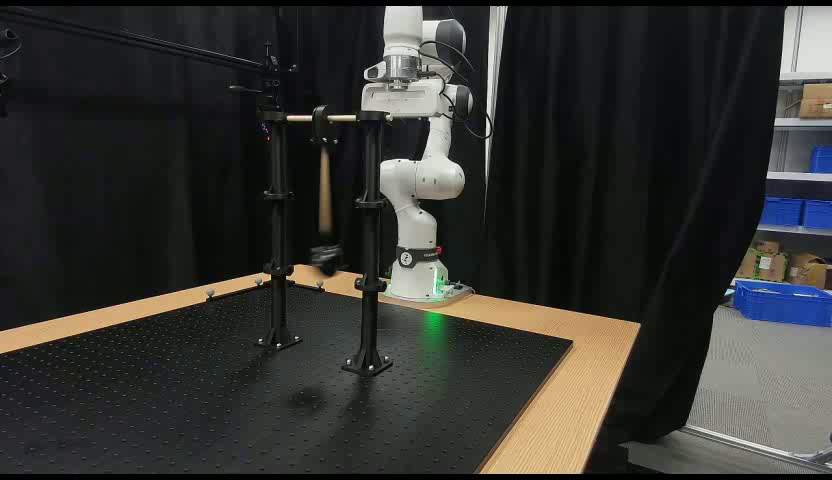
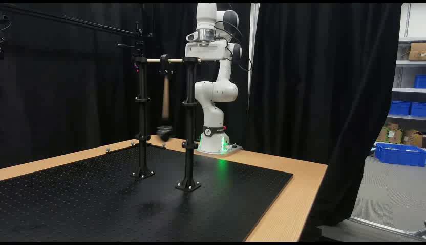
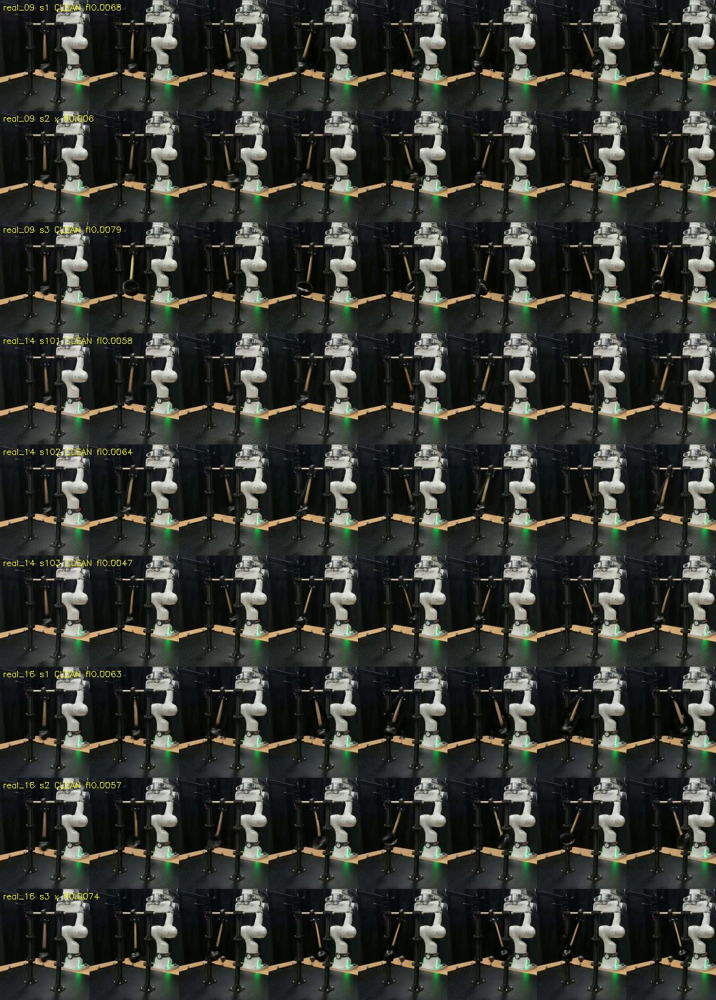

TASK 329 • DK1 RESULTS • SOURCE eb5aa13 • PRESENTATION ONLY
A supplied non-rest proxy raises the clean-gate count to 7/9.
Same three takes and seeds: the earlier release-from-rest proxy was 0/9 clean. The 18° proxy changes initial velocity, motion extent and measurement visibility together.
Attributed provisional result from dk1. Source-file and playback checks here add no independent physics measurement.
Every attempt stays in the denominator
Three takes × three seeds. Each new arm has 9 clips. No new plain arm was generated. Accepted-only ACF interval [0.992122, 1.001472] resamples seven selected rows; it is not scene-general uncertainty.
Period, amplitude and direction are supplied. P comes from later real video; 18° and inward direction are assumptions. This does not demonstrate a first-frame-only recipe. Review #6738/#6753 challenges amplitude-only causation: rendered motion, reader visibility, or both may explain the gate gain.
Play the three source-native examples
One committed first available seed per take, all source-clean. These examples are selected, not the full experiment. Bob deformation was reported by the author and was not scored.
Open native MP4 · 832×480, 93 frames at 24 fps. No compositing or retiming here.
The three source inputs

real_09: supplied P=1.172700s; new main arm 2/3 clean. real_14: supplied P=1.187767s; new main arm 3/3 clean.
real_14: supplied P=1.187767s; new main arm 3/3 clean.
real_16: supplied P=1.187400s; new main arm 2/3 clean.Numerical control and gate acceptance are different
The wrong-period ×1.7 arm follows the longer target numerically on both readers in 9/9 attempts. Only 4/9 pass the frozen gate; five remain rejected with ACF check. This 9/9 observation is ungated.
Two main-arm outputs are rejected for reader disagreement: real_09 seed 2 and real_16 seed 3. Another accepted row, real_09 seed 3, has MP flag check and R² 0.265. The frozen gate does not require the MP flag or a minimum R².
All 18 saved outcomes
Ratios divide each saved reader period by the supplied P, including rejected outputs. They are display calculations, not new tracking.
18 saved rows
Frozen rule, uncertainty and calibration
ACF flag ok AND luminance flicker<0.08 AND |P_MP/P_ACF−1|≤0.10. No MP-flag or R² gate. Accepted-only bootstrap pools 7 rows from 3 takes of one rig, with shared seed labels. The source attributes planted PASS to measure_pend v1; no new calibration or independent replication was run here.
The author's complete contact sheets

Unchanged author sheets: real_09, real_14, real_16; three seeds per take and eight cropped/resized frames per row. Author labels retain rejections. Static sheets are not a playback test. Only the three committed native clips above are packaged; hashes and sidecars cover all 18.
Keep the claim within this evidence
- The gate improvement supports the whole supplied non-rest proxy package on these clips. It does not identify amplitude as the sole cause or establish general scene transfer.
- Supplied P uses later-video timing (assumed 25 Hz); amplitude/direction and manual geometry are extra inputs. One still pose does not determine angular velocity.
- No NVIDIA-scoreboard check for these 18 clips. The separate quality scorecard reports ~0.057 DOVER cost on another cohort. Plausibility, robot prediction and non-regression remain unproved.
- Low luminance flicker does not certify stable shape. Some bob deformation is reported and unscored. Default changes belong to recipe owners; none are applied here.
Generation settings and sampler provenance
Cosmos3-Nano, q8 server 04e8e0de81, UniPC, start step 19 at σ 0.89844, CPU noise, 832×480, 93 frames at 24 fps, 35 steps, CFG 6, task 276 prompt. Seeds 1–3 for real_09/16 and 101–103 for real_14. Request flow_shift=10 is not an executed-schedule guarantee; source server sidecars are preserved.